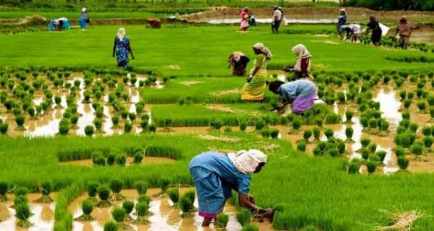
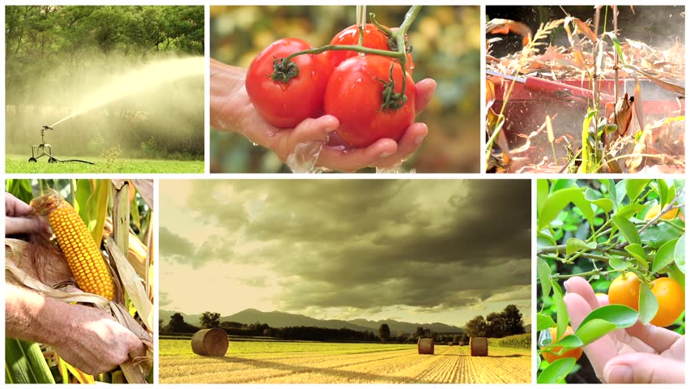

| |
|

It guides you to check whether the desired crop cultivation is possible for the given soil type,if yes,then it returns information about necessary rainfall and temperature in order to grow the specified crop cultivated. |

It guides you to get aware of the crops absolute price as declared by the Government and so you could avoid intermediate persons for selling your crops. |